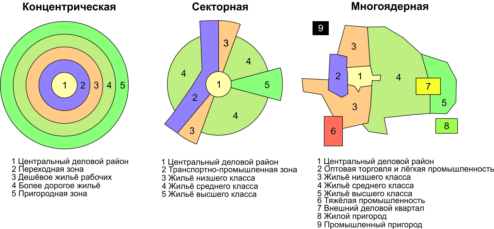
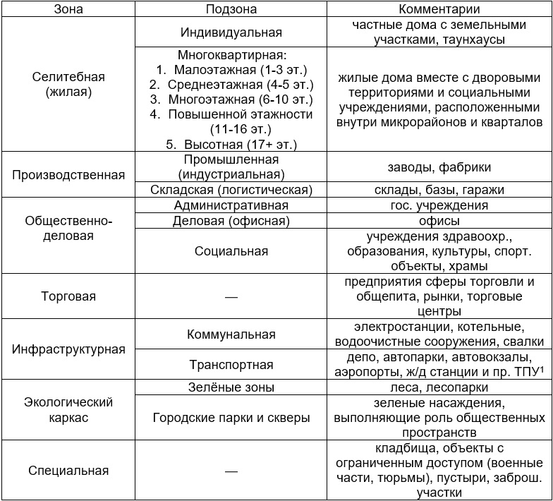
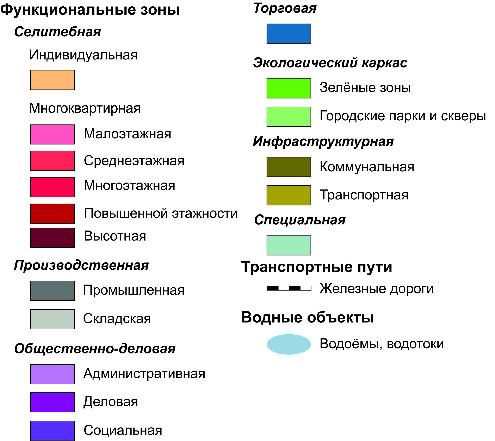

6 Функциональное зонирование
6.1 Теоретическая часть
Современным городам свойственна крайне быстрая трансформация функций. Изменение их специализации, административных функций, миграционной привлекательности и целый ряд других физико-географических и социально-экономических факторов воздействуют на городское пространство посредством изменения его использования. Все это создает фрагментацию городов на функциональные зоны – территории с доминированием того или иного вида использования и застройки.
При изучении пространственного распределения любых величин в географии принято использовать так называемый полимасштабный подход, т.е. различать область воздействия того или иного фактора в зависимости от масштаба территории. При изучении внутренней функциональной структуры городов, как объекта изучения на микромасштабном уровне, требуется отличать общие условия развития городов (которые были рассмотрены в главе о природно-исторической среде), от индивидуальных характеристик функциональных зон (таблица 6.1).
Таблица 6.1. Факторы дифференциации землепользования в городах
| Группа факторов | Примеры |
|---|---|
| Природно-географические | Инженерные ограничения строительства, наличие естественных барьеров |
| Экономико-географические | Расположение зон по отношению друг к другу, а также объектам и явлениям вне города (микро-ЭГП) |
| Исторические | Этапы пространственного развития города |
| Социальные | Наличие локальных сообществ, степень геттоизации27 |
| Экономические | Уровень цен на недвижимость, транспортная доступность |
| Проектировочные | Планировочная структура города, особенности законодательства |
Степень пространственной дифференциации землепользования в городах в первую очередь связана с возможностью мобильности населения. В средневековых городах место проживания было практически неотделимо от места приложения труда, так ремесленники и торговцы зачастую жили на верхних этажах дома, где была расположена лавка или мануфактура. Появление общественного и развитие личного транспорта, интенсивная индустриализация, расцвет торговли и финансового сектора привели к формированию зон городов с достаточно чёткой специализацией.
Первые попытки выделения городских функциональных зон и их систематизации были предприняты в начале XX в. Закономерности взаиморасположения функциональных зон были генерализованы в виде моделей землепользования городов:

Рисунок 6.1. Модели территориальной организации города
Источник: составлено авторами на основе материалов Pearson Prentice Hall28
Российские города значительным образом отличаются от описанных моделей в силу множества исторических факторов, тем не менее, на их примерах может быть проиллюстрировано влияние различных детерминантов функциональных зон города.
Концентрическая модель Бёрджесса29 хорошо отражает специфику американского города второй четверти XX в. Наиболее прибыльным в центре города является размещение офисов и объектов торговли, которые формируют центральный деловой район (ЦДР). Высокая концентрация рабочей силы и покупателей позволяет максимизировать прибыль несмотря на значительную земельную ренту. Производство тяготеет к расположению на окраине центральной части города – концентрация рабочей силы всё ещё велика, однако арендные ставки уже не столь высоки, как в ЦДР. Дифференциация жилья по ценовым категориям связана с экологическими причинами (состоятельные люди не хотят селиться поблизости от опасных производств) и возможностями мобильности населения (среди богатых гораздо больше число людей, имеющих автомобиль).
Секторная модель Хойта30 делает акцент на развитии функций вдоль транспортных коридоров (железных и автомобильных дорог). Общественно-деловые и производственные зоны будут размещаться так, чтобы иметь наилучшую транспортную доступность. Размещение жилья высокого класса также связано с природными факторами (преобладающее направление ветра: в американских городах восточное; в европейских, напротив, западное).
Многоядерная модель Харриса-Ульмана31 является более реалистичной, допуская возможность появления новых деловых районов, расположенных на «богатых» окраинах. Возникновение узлов экономической активности вне традиционного центра авторы связывают с тенденцией к минимизации транспортных издержек.
Первичной единицей функционального зонирования города обычно является квартал. Для каждого из этих участков городской территории, ограниченных улично-дорожной сетью, определяется доминирующий вид использования. При этом маркируется современный тип использования территории, что становится особенно важным в условиях быстрой трансформации функций в современных городах. Все чаще в российских городах можно встретить процесс джентрификации, который в развитых странах протекает уже на протяжении нескольких десятилетий. Под этим понятием понимают реконструкцию или качественное обновление территорий в непрестижных городских кварталах, происходящее как благодаря централизованному планированию, так и вследствие притока более состоятельных жителей. Результатом джентрификации становятся изменение социального состава, привлечение инвестиций и изменение функционального использования территории. Отдельным видом джентрификации может считаться реновация промышленных зон -подобные примеры сейчас можно встретить в большом числе российских городов, например реконструкция заводов ЗиЛ и «Красный Октябрь» в Москве, промзон Петроградской стороны в Санкт-Петербурге, завода «Уралпластик» в Екатеринбурге.
Наиболее общей типологией функциональных зон, используемой в том числе при разработке правил землепользования и застройки (ПЗЗ)32 является список, представленный в таблице 6.2.
Таблица 6.2. Функциональные зоны города

[^func-7]: Транспортно-пересадочные узлыОтдельно на картосхеме функционального зонирования отображаются линейные объекты транспортной инфраструктуры (железные и автомобильные дороги), административные границы и водоёмы (реки, пруды, озёра).
Функциональное зонирование обязательно предполагает некоторую степень пространственной генерализации (обобщения географической информации). Отнесение квартала к определенному функциональному типу осуществляется на основе преимущественного использования. Так, если в центре жилого квартала расположен социальный объект (например, школа), весь квартал будет отнесён к селитебной функциональной зоне. Аналогичным образом тип застройки по этажности определяется по преобладающей высоте.
Функциональное зонирование в полевых условиях базируется на непосредственном визуальном обследовании территории. Признаками видов использования могут являться вывески у входов в дома, интенсивность людских и транспортных потоков, характер застройки. В камеральных условиях основой для выделения функциональных зон становятся планировочные дешифровочные признаки картографических материалов.
Селитебные, производственные и торговые зоны обычно выделяются достаточно легко по характерному рисунку жилых кварталов, производственных цехов и торговых павильонов. Основные трудности возникают с общественно-деловой зоной, которая может выглядеть на снимках по-разному. В данном случае индикаторами могут служить высотные офисные здания в крупных городах, паркинги, или собственно центральное расположение для малых городов.
Коммунальные и транспортные зоны могут быть определены по характерным признакам объектов (например, для водоочистных сооружений это отстойники круглой формы, площадки для стоянки автобусов в депо). Для специальных зон может потребоваться консультация с альтернативными картографическими источниками (например, Wikimapia, 2ГИС).
6.2 Практическая часть
Методические рекомендации для формулировки и выполнения задания:
Функциональное зонирование городских территорий в первую очередь требует навыков анализа картографических источников. Для более тщательного анализа исследуемого полигона по желанию также могут быть проведены полевые обследования. Наблюдение на местности помогает более точно отобразить последние изменения в использовании городских территорий: подобный способ поможет школьникам развить пространственное мышление. Также в выполнении задания очень важна правильная генерализация, которая зависит от масштаба исследуемой территории и значимости тех или иных объектов в её пределах.
Объектом функционального зонирования каждой группы школьников станет участок территории поселения. С учётом различного масштаба городов учителю предлагаются на выбор следующие варианты:
территория всего города (для малых городов и сельских поселений)
часть территории города (для средних и крупных городов) – полигон размеров приблизительно 2*2 км, на котором представлено большинство типов использования территории.
При условии участия в занятии более 6 человек исследование может проводиться в малых группах (3-4 человека). Каждая группа получает один из участков городской территории таким образом, что затем полученные данные могут быть сопоставлены для получения комплексной картины функционального использования городского пространства. Для малых городов в случае участия в занятии нескольких групп могут быть подобраны поселения-аналоги, расположенные в том же субъекте РФ или соседних регионах. Время, отведённое на данное занятие, составляет 5 академических часов, включая 3 часа на составление карты функционального зонирования в камеральных условиях, а также 1 час на выступления школьников. При проведении дополнительных полевых наблюдений время занятия увеличивается на 1 час. При работе над заданиями школьники могут использовать материалы предыдущих занятий (плотность населения, историческая среда, геометрия города).
Этапы выполнения задания:
- Подготовительный
Для выполнения задания требуется картографическая основа исследуемого участка. В целях экономии времени учителю предлагается подготовить распечатанные черновые картосхемы исследуемых полигонов в формате A3. Наиболее подходящими являются электронные картографические источники (Яндекс.Карты, OpenStreetMap, GoogleMaps). Приветствуется использование школьниками для создания карты специализированных программных пакетов ArcGIS или QGIS, а также усовершенствованных графических редакторов (например, CorelDraw).
Если задание выполняется полностью в камеральных условиях, учителю рекомендуется также ознакомить учащихся со схемами генерального плана и правил застройки и землепользования поселения, которые обычно находятся в открытом доступе на сайтах муниципальных образований.
В случае возможности проведения полевого занятия школьники приступают к непосредственному картированию городского пространства и должны быть проинструктированы учителем. Функциональное зонирование проводится по основным визуальным и планировочным признакам (характер застройки, вывески организаций), группы не посещают территории с ограниченным доступом.
- Функциональное зонирование
Каждая группа школьников первоначально изучает спутниковые снимки своего участка и предварительно определяет набор функциональных зон, встречающихся в пределах полигона. На данном этапе необходимо составить легенду карты на основе предлагаемого перечня функциональных зон (таблица 6.2). В качестве дешифровочных признаков может быть использован характер планировки, застройки. Определённую сложность в идентификации набора функций представляют территории, испытывающие трансформацию (например, «переквалификацию» из промышленных в торговые или деловые). Необходимо помнить, что на картосхеме должно быть указано именно современное использование территории, что особенно важно для старопромышленных городов.
При возникновении затруднений в определении зон по снимкам, учащимся следует использовать картографические справочники организаций (например, 2ГИС для крупных и некоторых средних городов) или Интернет-карты (Яндекс.Карты, Google Maps). Рекомендуется использовать карты в формате спутникового снимка либо гибридной схемы.
На чистовой бланк (лист формата A3) наносится планировочный каркас исследуемой территории, выдержанный в масштабе. Далее полученная из спутниковых снимков и картографических справочников информация, обобщается. В случае, если возможно проведение полевого занятия, к данным материалам добавляются и данные, полученные в ходе наблюдений в городе.
Следует помнить, что основной единицей городского планирования является квартал и разбиение его территории на несколько зон оправдано лишь в случаях исключительной общегородской значимости тех или иных объектов. Выбор функциональной зоны осуществляется по численному преобладанию площади, занятой определённым видом деятельности.
При составлении легенды стоит обратить внимание на её стилистическое оформление, которое позволит облегчить восприятие итоговой карты (см. пример оформления готового задания). Картосхемы функционального зонирования территории являются классическим примером применения качественного фона (одинаковая заливка для однородных участков).
Традиционно для обозначения селитебной зоны используются оттенки оранжевого и красного цветов, причём чем выше этажность застройки, тем цвет более насыщен. Производственная зона обозначается оттенками серого цвета (подобную практику можно наблюдать, например, на картосхемах Яндекса), рекреационная зона обозначается оттенками зелёного. Другие зоны не имеют строго закреплённого цветового кода. Однако чаще всего общественно-деловые и торговые зоны обозначаются такими цветами, как фиолетовый, синий, розовый, бежевый. Инфраструктурные и специальные зоны отображаются оттенками жёлтого и коричневого.
Функциональные зоны наносятся на итоговую карту участка вместе с условными обозначениями в соответствии с правилами оформления карт (см. Занятие №1[#intro]).
- Выступление
Итогом работы каждой группы школьников кроме карты функционального зонирования участка должно стать краткое выступление, характеризующее функциональные типы на исследуемом участке. Учащиеся опираются на факторы дифференциации территорий по видам землепользования, указанные в таблице 6.2, приводя примеры подобных связей в рамках своего участка. Опираясь на собственные знания о городе и проведённые наблюдения, школьники также могут попытаться сделать выводы о возможной динамике функционального использования территории (трансформация промышленных зон в офисные и жилые, открытие новых промышленных и инфраструктурных объектов и т. д.)
Необходимые материалы: простой карандаш, цветные карандаши (лучше – акварельные 24 цвета, линейка
Пример оформления задания:

Пример условных обозначений для карты функциональных зон:

Процесс сегрегации (отделения) мест проживания определённых групп населения (по этническому признаку, уровню доходов).↩︎
URL: http://www.geo41.com/intra-urban-spatial-patterns/ (дата обращения 10.11.2018 г.)↩︎
Эрнст Уотсон Бёрджесс (1886-1966) - американский социолог, представитель Чикагской школы социологии, один из основоположников городских исследований, как научного направления.↩︎
Хомер Хойт (1895-1984) - американский экономист, специалист по оценке недвижимости↩︎
Чонси Деннисон Харрис (1914-2003) и Эдвард Льюис Ульман (1912-1976) – американские географы, занимавшиеся исследованиями городов и транспортных систем↩︎
Правила землепользования и застройки – официальный документ, прилагающийся к генеральному плану населённого пункта, где обозначены разрешённые виды использования территории.↩︎